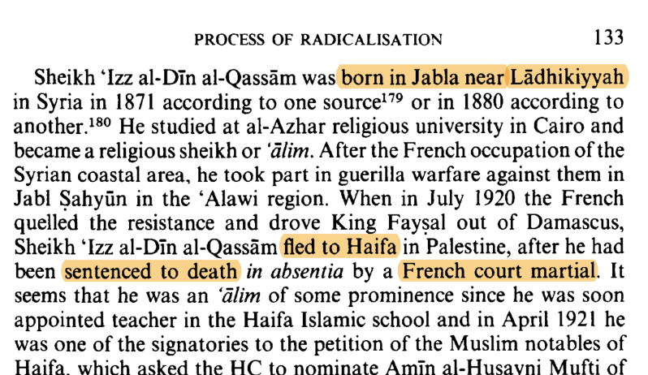
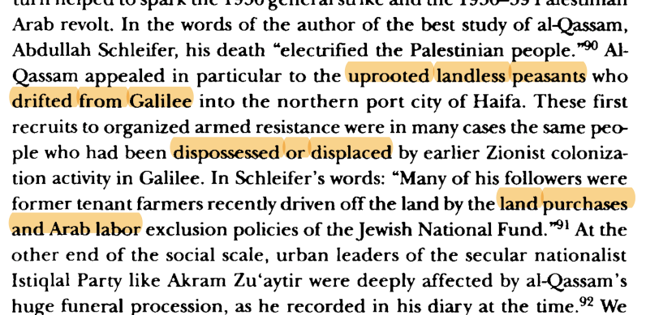
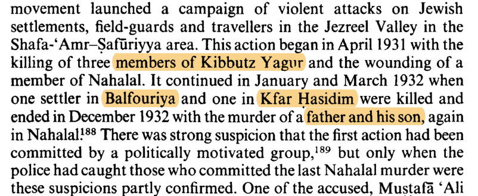
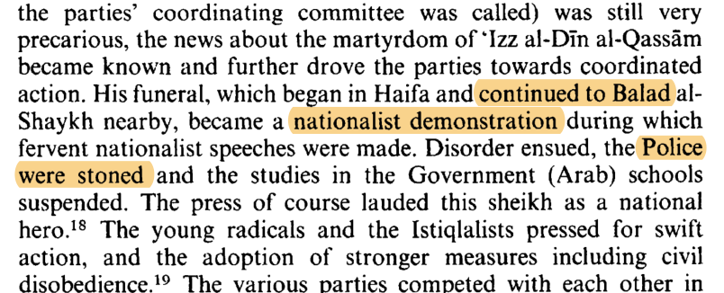

The 1936–39 revolt was never a single struggle. It was at once an anti-colonial rising against Britain, a campaign against the Yishuv — and, beneath both, a Palestinian civil war: the Husayni-led rebel command against the Nashashibi opposition and the British-funded fasa'il al-salam (“peace bands”), with land-sellers, mukhtars and informers killed in between. This ledger tags every event by who acted and whom they struck — the intra-Arab register is the spine. Click any row to surface the underlying corpus passage; the timeline and the date sort read the same data two ways.
The ledger below opens in 1935, but the revolt has a prehistory, and it has a name. Sheikh ʿIzz al-Din al-Qassam — born at Jabla near Latakia (c. 1882), al-Azhar-trained, an ex-Ottoman army chaplain who had fought the French in Syria and reached Haifa in 1920 under a French court-martial death sentence — was the man who first turned grievance into organized armed force. In Haifa he preached at the Istiqlal Mosque, served as the Shariʿa-court marriage registrar (a post that sent him through the villages), and chaired the Haifa Young Men's Muslim Association. From around 1925 he built a network of secret cells — the “Black Hand” — preaching jihad against “the twin infidels, the Jew and the Briton.”
His base is the analytical core. Al-Qassam recruited among the uprooted Galilee fellahin who had been dispossessed by land sales and the Histadrut's “Hebrew-labour” exclusion and had drifted into the Haifa slums and the harbour-labour pool — “in many cases the same people who had been dispossessed or displaced by earlier Zionist colonization activity in Galilee” (Khalidi). It was, as the British conceded, “something new” — a cross-class religious-national insurgency reaching the poorest stratum for the first time. His sermon became proverbial: “You are a people of rabbits, who are afraid of death and scaffolds… nothing will save us but our arms.”
The cells drew first blood well before the strike: the 1931–33 raids — three of Kibbutz Yagur's people killed at the Nabi Musa festivities (April 1931), settlers at Balfouriya and Kfar Hasidim (1932), and a father and son bombed at Nahalal (December 1932) — the first organized Palestinian-Arab armed campaign against the Yishuv. Arrests then stalled it for three years. In November 1935 al-Qassam moved to the Jenin hills to begin a rising; the British trapped his band near Yaʿbad and killed him on 20 November. Ben-Gurion called it “their Tel Hai.”
His funeral — Haifa to Balad al-Shaykh, police stoned, schools closed — became a mass demonstration, and the elite's absence from it (neither the Mufti nor the party leaders came) made the martyrdom a standing rebuke. “Al-Qassam achieved more in death than in fifteen years of preaching” (Mattar). Five months later his lieutenant Farhan al-Saʿdi's men fired the shots that began the revolt; his followers went on to supply 2 regional and 14 band commanders of it. Every dot in this ledger sits downstream of him.




Eight registers, one war. Events are split by perpetrator–target pair: intra-Arab (rebels killing land-sellers, mukhtars, informers, opposition notables), peace bands (the Nashashibi/opposition counter-rebellion), attacks on Jews, attacks on the British, British reprisal & pacification, Zionist counter-violence (Irgun, Special Night Squads), the Druze–rebel conflict, and the strike/diplomacy/command track.
The intra-Arab spine. From autumn 1937 the second-phase terror was aimed more at moderate Arabs than at the British or Jews. The Husayni faction decapitated the opposition region by region — Fahoum (Nazareth), Shuqayri (Acre), the Irshayid brothers (Jenin), al-Dajani (Jerusalem), Nassir al-Din (Hebron) — while the British-funded peace bands fought back and supplied the intelligence that killed the rebel command. The feud outlived the revolt: Fakhri Nashashibi (1941), Fakhri ʿAbd al-Hadi (1943).
The accounting. Cohen's triangulated count puts Arabs killed by rebels at about 1,000 — substantial, but less than half the ~4,000–7,272 killed by British security forces. The popular “more Arabs killed by Arabs” claim is true only of the terminal 1939 phase, not the revolt as a whole.
Symmetric rigor. The faction line was porous and venal: the leading peace-band commander (ʿAbd al-Hadi) was a 1936 rebel commander-in-chief who switched for pay and was simultaneously negotiating his return to the rebels. Read the colours as patronage-and-faction war, not moderates-versus-terrorists.
Actor chips. Each row is tagged by perpetrator so a single colour can be traced across the war — rebel (Husayni), peace band, British, Jewish, Druze.
Sources: Porath, Palestinian Arab National Movement vol. 2 (1977); Cohen, Army of Shadows (2008); Hughes, Britain's Pacification of Palestine (2019); A Survey of Palestine (1946); Morris, Righteous Victims. Full event log & provenance in the research repository.